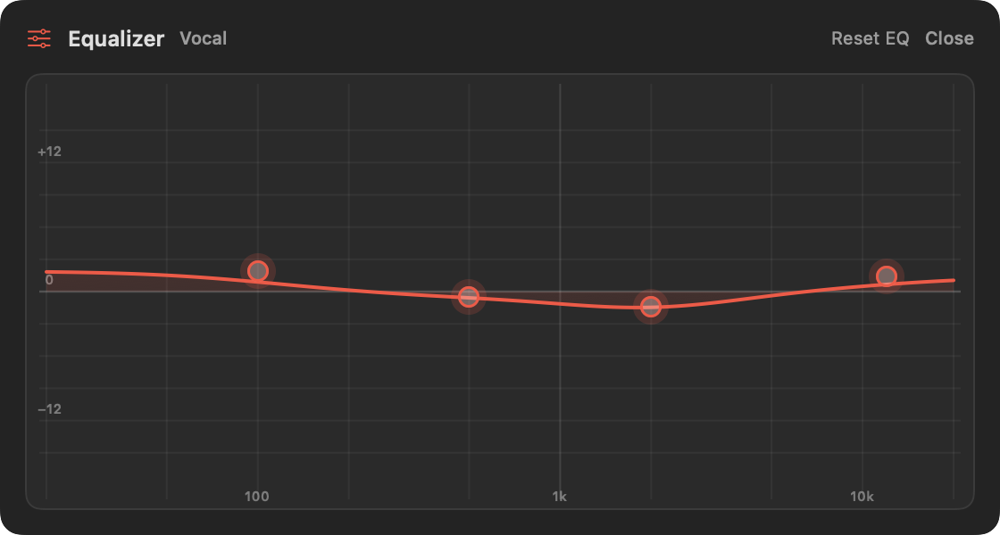

12 полос на одном экране
Семь входных каналов и пять шин: фейдер, метры и прямой доступ ко всем ручкам.
FLOW8 соединяется с микшером Behringer FLOW 8 по Bluetooth. Полный функционал официального приложения, без MIDI и USB.
Нативно для macOS 14 и новее. Apple Silicon и Intel. Бесплатно.

Тот же набор управления, только в нативном окне macOS.
Семь входных каналов и пять шин: фейдер, метры и прямой доступ ко всем ручкам.
Только Bluetooth: без MIDI, USB и лишних кабелей. Соединение и синхронизация идут по воздуху.
По 16 пресетов с реальными названиями, параметр пресета, характер, уровень шины и посылы всех каналов.
Загрузка одним кликом, сброс микшера и имена слотов, которые читаются с самого FLOW 8.
Нажмите EQ на любой полосе, и откроется отдельное окно с графиком и четырьмя ручками. Точки тянутся мышью, двойной клик возвращает полосу в ноль.

Оба FX-слота, 15 снапшотов и tap tempo в одном окне.

Reverb, delay и модуляция: 16 пресетов, параметр, характер и уровень FX-шины.

Слоты хранятся в микшере, имена читаются по Bluetooth, загрузка одним кликом.
Состояние синхронизируется по Bluetooth: фейдеры, эквалайзеры, посылы, mute и solo, фантомное питание, лимитеры и FX-пресеты. Движения ручек на самом микшере подхватываются на лету.
Нужны macOS 14 или новее и разрешение на Bluetooth. Xcode не требуется: достаточно Command Line Tools.
Возьмите последний релиз на GitHub и распакуйте его.
Переместите FLOW8.app в папку «Программы».
При первом запуске macOS попросит доступ: он нужен для управления и чтения состояния.
Приложение подписано ad-hoc, без Developer ID. macOS помещает скачанный файл в карантин, поэтому снимите атрибут карантина один раз:
xattr -dr com.apple.quarantine /Applications/FLOW8.appЛибо откройте Системные настройки, затем Конфиденциальность и безопасность, затем «Всё равно открыть».